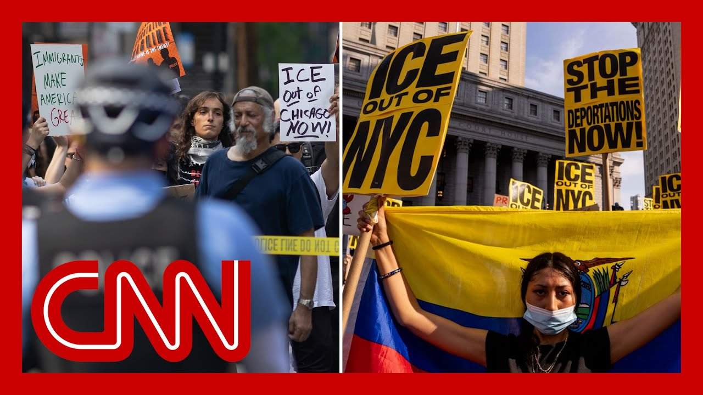

【抗议ICE突袭的示威活动正在全国蔓延】
Summary: Protests against ICE raids and deportations are growing in major US cities like Los Angeles, New York, and Chicago, with large crowds blocking streets and clashing with authorities.
摘要： 美国洛杉矶、纽约和芝加哥等主要城市爆发了针对ICE突袭和驱逐的抗议活动，大批示威者堵塞街道并与当局发生冲突。

⏱️ Estimated Reading Time: 12 min
📚 六级生词 📚 雅思生词 📚 托福生词 📚 专八生词 📚 SAT生词 📚 考研生词 📚 GRE生词 📚 高考生词 📚 视频里的生词
We're covering the breaking news the protests here in Los Angeles where we are anticipating a deci any minute regarding a curfew here in Los A which would take effect tonight as darkness falls where we are.
我们正在报道洛杉矶抗议活动的突发新闻，预计随时会宣布宵禁，今晚天黑后生效。
So as we anticipate that decision coming any moment clear that the mayor of Los Angeles supports it.
洛杉矶市长明确支持这一决定，预计随时会公布。
We've got live pictures of protesters in New York and Chicago filling the streets, New video just into out front of a car in moving through a protest.
我们看到了纽约和芝加哥街头挤满抗议者的现场画面，最新视频显示一辆汽车驶过抗议人群。
It appeared to push a few sign h there in the protest in Chicago before then speeding So unclear exactly what we were seeing ther Also, large protests underway in New York City protesting Trump's deportations and the use of Ice officers.
这辆车似乎在芝加哥抗议活动中撞倒了一些标语牌，随后加速离开，具体情况尚不清楚。与此同时，纽约市也爆发了大规模抗议，反对特朗普的驱逐政策和ICE官员的行动。
With those Ice rage, Shimon Procopio is OutFront in New York Whitney Wild is out front in Chi I want to begin, though, with you, Shimon, in New York.
关于ICE引发的愤怒，Shimon Procopio在纽约现场报道，Whitney Wild在芝加哥现场报道。首先，Shimon，你在纽约看到了什么？
And what are you seeing there? So, Aaron, one of the largest pr that this city has seen in quite some time, this protest, a for blocks from each side of the avenue from Sixth Avenue.
Aaron，这是纽约市近年来规模最大的抗议之一，示威活动占据了第六大道两侧多个街区。
We're now on Hudson Street, and we've been going for about nearly two hours.
我们现在在Hudson Street，抗议已持续近两小时。
And you can see people are holding signs saying Ice out of New York City.
可以看到人们举着“ICE滚出纽约”的标语。
We've seen Flags of Mexico, we've seen the Palestinian flag.
我们还看到了墨西哥国旗和巴勒斯坦国旗。
And really just a convergence of different issues and different concerns that people here in New York Cit Also, they all first gathered at around 5:00 eastern here at Foley Squar which is right outside the Federal building and Ice off And they then marks for about several blocks, and then they veered off onto another street, Varick Stre where there are more Ice offices and immigration courts.
这反映了纽约市民对多种问题的共同关注。抗议者最初于东部时间5点在Foley Square集合，那里紧邻联邦大楼和ICE办公室，随后游行几个街区，转向Varick Street，那里有更多ICE办公室和移民法庭。
And they stood there for several chanting and getting together, and all of the traffic in the ar was completely shut down.
他们在那里高喊口号，聚集在一起，导致周边交通完全瘫痪。
And it was the first time that we had seen the NYPD start to mobilize, start to gath to try and figure out how to get the street back open.
这是NYPD首次开始动员，试图重新开放街道。
But the demonstrators here left, and this is where we are now on Hudson Street.
但示威者离开后，我们现在来到了Hudson Street。
We are now marching towards a pa where they plan on stopping, and we'll see if that continues.
我们正朝一个公园行进，他们计划在那里停下，看看是否会继续。
But what is so significant here are and certainly I've covered a lot of protests here in the last several years.
但这次抗议的规模之大是近年来罕见的。
This is one of the largest demonstrations, certainly, that we've had here in New York As for the NYPD, they are lettin they are allowing them to take over the streets to marc Of course, the goal is to have them essentially tire out and then st But we're not seeing any kind of show of force.
NYPD允许示威者占据街道游行，目的是让他们最终疲惫停下，但目前没有展示武力。
We're not even seeing NYPD in the middle of the crowd.
我们甚至看不到NYPD在人群中。
Most of them, when they do appea they're on the outside of the gr and they're just allowing them to continue now to March.
他们大多出现在人群外围，允许示威者继续游行。
And they've been going for well two hours now.
抗议已持续两小时。
I would. All right, Shimon, thank you ver Going to be covering this from New York tonight.
好的，Shimon，非常感谢。今晚将继续从纽约报道。
And let's go to Chicago, where Whitney Wild has been covering the protests.
现在转向芝加哥，Whitney Wild正在现场报道抗议活动。
There. Whitney, we saw that video of th just moments ago.
Whitney，我们刚刚看到了那段视频。
But what are you seeing where you are right now? Well, we're here at the Federal This is right outside the federal courthouse here in downtown Chicago.
我现在在芝加哥市中心的联邦法院外。
This is a really common place where people protest.
这里是常见的抗议地点。
It's quiet at the moment. Erin, but this is where that very larg protest had stepped off.
目前很安静，但这里曾是大型抗议的起点。
That was around 530. They made their way down the most iconic location in Chicago, Magnificent Mile, right down Michigan Avenue.
抗议者于5:30左右出发，沿着芝加哥最具标志性的Magnificent Mile，即Michigan Avenue游行。
And Erin, if you can see from those aerial video, that really gives you a sense of the scale here.
从航拍视频中可以看出抗议的规模。
Because this protest was massive it took up, you know, the entire side of Michigan Aven It also started to sort of edge into oncoming traffic the other what we're told by people who ar at the very center of organizing is that that crowd is about to come back to Federal where they will continue this pr But as you had mentioned, the this has been a peaceful protest The major incident here was that car that appeared to clip a few protesters that was at Wabash in Monroe.
抗议者占据了Michigan Avenue一侧，甚至延伸到对向车道。组织者表示人群将返回联邦法院继续抗议。除了一辆车在Wabash和Monroe撞到几名抗议者外，抗议基本和平。
So we're going to continue to try to figure out what happen That driver was arrested.
我们仍在调查此事，司机已被逮捕。
What the intention of that drive Erin, a lot of open questions he But for the most part, despite the scale here, and it is a noisy protest and there have been no major incidents aside from th that that appeared to have drive you know, into or near that prot Whitney Wild, thank you very much in Chicago.
尽管规模庞大且嘈杂，但除了那起车辆事件外，没有其他重大冲突。Whitney Wild，非常感谢。
And we'll be back here with the breaking news here in L watching the protests here and the possibility of the breaking news of a curfew Any moment.
我们将继续关注洛杉矶的抗议活动和可能发布的宵禁。
We'll be right back. We're looking at these live imag here out of Los Angeles, pictures of the fifth day of pro various street intersections here throughout downtown L.A. over the freeway.
我们正在观看洛杉矶第五天抗议的现场画面，示威者遍布市中心多个路口和高速公路。
You're seeing groups of proteste and police. We've seen tactical units.
可以看到抗议者和警察，还有战术部队。
We are awaiting news on whether there's a curfew.
我们正在等待宵禁的消息。
But President Trump just moments ago, making it clea how long that he intends to keep the military in Los Angeles.
但特朗普总统刚刚明确表示他打算让军队留在洛杉矶多久。
If there's peace, we get out. If there's even a chance of no p we stay there until that peace.
如果恢复和平，我们就撤军；如果仍有不安定因素，我们将继续驻守。
This comes as Trump made it clea today his intention to use the military for political purposes.
特朗普今天明确表示他打算将军队用于政治目的。
Tom Foreman is OutFront. Thousands of National Guard troo and hundreds of Marines have been called to Los Angeles by President Trump, who insists military muscle can contain the If we didn't send out the Nation And last night, we gave them a little additional Los Angeles would be burning rig But local officials say police were already dealing with sporadic violence around the largely peaceful prot which they say were spurred by the white House's desperate and clumsy quest to increase deportations.
Tom Foreman报道：特朗普总统调集了数千名国民警卫队和数百名海军陆战队员到洛杉矶，声称军事力量能控制局势。但地方官员表示警方已能应对零星暴力，抗议主要由白宫仓促的驱逐政策引发。
People have asked me, what are they Marines going to d when they get here? That's a good question. I have no idea.
有人问我海军陆战队来了能做什么？这是个好问题，我也不知道。
It underscores Trump's long standing interest in using military, even against Americans For example, when Black Lives Matter protesters rose up Trump reportedly considered deploying troops and asked his then defense secre can't you just shoot them? Just shoot them in the legs or s Trump denies such tales.
这凸显了特朗普长期想用军队对付美国人的倾向。例如，据报道他在BLM抗议期间曾考虑派兵并问国防部长“能不能直接开枪打腿？”特朗普否认这些说法。
But just last fall, when asked about potential election unrest, he said we have some very bad pe We have some sick people, radical left lunatics, and I think they're there and it should be very easily han if necessary, by National Guard or if really necessary by the mi He has stretched norms by sending thousands of troops to America's southern border, by planning a massive parade of military force, and by ignoring former chairman of the Joint Chiefs, Mark Milley who said, standing beside Trump for a photo op against the backd of the Black Lives Matter protests, was a mistake.
去年秋天被问及选举骚乱时，他称“有些极左疯子”，必要时可用国民警卫队或军队应对。他打破常规向边境派兵、计划阅兵，并无视前参谋长联席会议主席Mark Milley关于BLM抗议期间合影是错误的批评。
That's fundamental to the health of this republic. You never want the military in actual politics to be sure, there are a few rarely used ways a president can call troops to enforce domestic law, including the Insurrection Act, aimed at stopping uprisings against government authority.
军队不应参与政治。总统极少动用《叛乱法》等法律在国内部署军队。
But Trump did not cite that and when his followers attacked the Capitol in 2021 trying to overturn the election, Instead, he pardoned all those protesters on his first day back in office.
但特朗普未引用该法，且在2021年支持者冲击国会后赦免了他们。
Still in Los Angeles, where the protesters oppose him. Trump is keeping that card on th If there's an insurrection, I would certainly invoke it will the last time the Insurrection Act was invoked was in the 1992 LA riots.
在反对他的洛杉矶，特朗普保留使用《叛乱法》的可能性。上次启用该法是在1992年洛杉矶骚乱。
I was there, and I will assure y they were much bigger, much broa spread and much more violent than probably all of the unrest we see right now. Bottom line is, when it was impo then it was with the agreement of the president, the governor and the mayor all acting togethe Aaron.
当时的骚乱比如今严重得多，启用该法需总统、州长和市长达成一致。
Yeah, something something we are not seeing at all right now. Tom Foreman, thanks so very much Will be here through the night r We'll see if that curfew is announced in just a few moments.
目前完全没有这种协调。Tom Foreman，非常感谢。我们将通宵报道，看看是否会宣布宵禁。
In the meantime, thanks for watc
感谢观看。